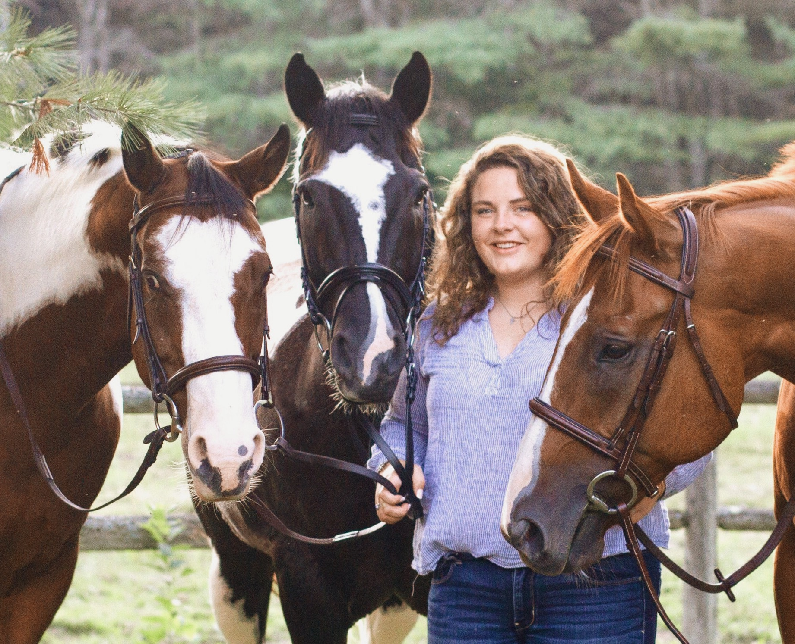

Hi, my name is Ollie and I am a thoroughbred horse. I am currently owned by Meriwether Stockford, who purchased me in 2016 in Aiken, South Carolina. I now live in Bowdoinham, Maine with my two brothers Sioux and Harley.